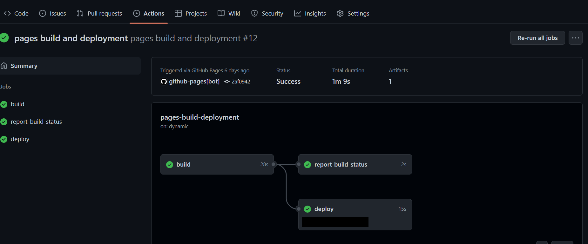

which git
## /usr/bin/git #Example PathUMN Student Seminar: R Websites with Quarto & Github
I. Introduction
In the past, Rmarkdown (knitr, .rmd) has been the premiere tool for reproducible data analysis and communication with the R and Rstudio universe. Personally, I’ve been using it for years and have grown quite fond of it – which is why fear and grief struck me when I heard that Quarto, the R team’s new multi-language scientific communication tool, was going to be replacing Rmarkdown. Though I was excited for all the new possibilities I was also upset. In my old age, I’d grown quite fond of Rmarkdown and I stubbornly resented having to learn something new.
Good news! It turns out I was being a wee bit dramatic given that Quarto is still fundamentally an R/Rstudio product, and as such, is very very similar in style and workflow to Rmarkdown – so luckily if you’re familiar with .rmd then transitioning to .qmd will be rather painless. If you’re new to both, have no fear! Rstudio (the IDE interface) makes it easy to use and with the use of .Rprojects (see below), most project come with example .qmd files to get you started.
One feature of knitr Rmarkdown that I’d always personally found to be really cool was the ability to render and host websites built with R & Rmarkdown on Github for free. I host(ed) my own website with Rmarkdown & Github so I was naturally curious how difficult or different it would be to switch it over to a Quarto website, and it turns out, not too hard at all. I thought it would useful to share some of that experience so that we all have a brief intro to some really important tools like .git, Github, and Quarto, but mostly, so that we can all share the wonderful work we do here for free with the world! (And help us get jobs when we graduate).
So what exactly are we going to do today?
Today we’re going to learn how to create and host a website with R, Rstudio, Quarto and Github Pages. We will focus on setting y’all up with the tools to create your own personal/professional website – with a brief example at the end illustrating how this workflow can be extended to fancier displays and more advanced scientific communication tools.
The roadmap for today looks like –
- Intro to
git, Github, & Quarto- Installation instructions & resources
- Intro to .Rproject Workflow \(\pmb{\longrightarrow}\) Quarto Website
- Good practice for all types of projects
- One YAML to Rule Them All (
.yml)- Controls the rendering or building of the site
- Defines aesthetics (
.css) as well as structure - Instructions that
.qmd\(\stackrel{\text{knitr}}{\pmb{\longrightarrow}}\).MD\(\stackrel{\text{pandoc}}{\pmb{\longrightarrow}}\)<HTML>
- How to add pages and content to your site
- Add
.rmdor.qmdfiles which also render to<HTML>pages - Include text, pictures, and links
- Modify themes and colours for free with Bootswatch
bslib - Inline
<HTML>or adding custom.css(extra fancy)
- Add
- How to publish your site with
.git& Github Pages- Connecting the local project with the remote Github directory
- Dealing with a few small but important details
- Stage, commit, pull, push your changes (Terminal or GUI)
- Deploying the website with Github Pages
- What else can you do with R, Quarto, and Github?
- Example of a Quarto/Github website with some more ‘advanced’ features
- Resources for your own Quarto/Github projects!
II. Git & Github
Installing .git
Here I’d highly recommend following the steps for Mac, Windows, & Linux outlined by the wonderful Jenny Bryan in Chapter 6 Install Git of her comprehensive book on the subject – Happy Git and GitHub for the useR. Follow the instructions and then check below to ensure it’s installed.
Note - If you have the most recent version of Rstudio, you have a built in terminal – it’s the page next to the R Console which is in the bottom right pane of the Rstudio IDE by default.
Typing which git into the terminal (not console) should return the file path to the .git executable –
and
git --versionto see the version.
Create a Github account
- Open your preferred web browser and navigate to https://github.com/
- Create an account
- I’d recommend selecting and verifying the ‘Student Account’ option
- Select the ‘create a new repository’ and name it
example.github.io- This will be the new website we build today
- Do not initialize it with any files
- i.e. no README, no .gitignore, just don’t check any boxes
- We want a completely empty repository / directory / folder
Git Basics
Git connects to a remote folder, just like those on your local computer, but one that exists outside your computer (on Github). Any changes to this folder are made with version control. All that means is every single change made to any files in the folder are tracked or recorded and in order to “save” your changes you have to first add them and commit them with a message. In order to access others’ changes you have to pull them from the remote folder to your local folder, but in order to truly “save” your work make it available to other
Basic Git Commands and Workflow
Git is generally organized like a file ‘tree’. The main branch is the root folder or directory (here example.github.io).
Basic Github flow (in terminal)
git statusCheck the status of the repository/foldergit add *Stage your changes for “saving”git commit -m "your message"Add a message to your changesgit pull origin mainPull changes from remotemainbranch to localgit push origin mainRequest to push your changes from localmainto remote
Rstudio has a GUI to do this as well!
Always, always, always pull before you push
Helpful hints
- Pull early and often
- Informative commit messages
- Be very, very careful when pushing
- Pull early and often
III. Quarto
Installation Instructions
- If you haven’t already, download the newest
Rand Rstudio - Type
install.packages("quarto")into the R Console or navigate to https://quarto.org/, click ‘Get Started’, and download the Quarto software for your specific device
Resources to Get you Started
The initial Quarto landing page gives this brief demo on – - Rendering - Visual editor (don’t recommend) versus classic editor - Brief intro to the .yml - Including code chunks - Instead of {r label, echo = FALSE}, options are written in chunk like so
#| label: label
#| include: false
#| fig.height: 6
#| etc.....- Markdown text syntax
- Here is a great cheat sheet for Markdown syntax in general
The Hitchhiker’s Guide to the Quarto
The Quarto Guide is the definitive, comprehensive instruction manual for all things quarto. It really has it all and is the best resource for transitioning from .rmd to .qmd.
There are guides on everything from Markdown, Figures, and Tables, to Documents, Presentations, Websites – and much, much more!
The Quarto: Creating a Website guide is the main resource for Quarto websites and if you’re interested in developing one, I’d highly recommend having it handy when you do so.
IV. Website Tutorial
At it’s core, hosting a Quarto website in R with Github boils down to 3 main components –
- .Rproject \(\longleftrightarrow\) Github connection (Github Pages)
- .yml which controls the knitting/rendering/building of the website (just like normal)
- .qmd files rendered to .html pages (like any other website)
Note - If you’ve just recently installed .git, Quarto, Rstudio, or anything else, it’s a good idea to restart R, close the session, and restart Rstudio before continuing.
Step 1. Initialize Github Repository
Go to Github
Click the green ‘New’ button on the left to start a new repository
- Name it
example.github.io - Make sure that it’s
- Public
- Not initialized with a README
- Not initialized with a .gitignore
- Why? (Hint: There would be a discrepancy between our local folder and the remote folder on Github)
- Name it
Notes – - The ending .github.io let’s Github know automatically that it’s a website - Not necessary, but makes life easier – can always change url later - Website names are case sensitive so it’s a good idea to keep everything lower case
- Make sure there’s nothing in the repository
Step 2. Set up a Quarto Website .Rproject in the local directory example.github.io
Click on the ‘blue R cube Project: (None)’ drop down in the top right corner
Click on ‘New Project…’
- There are many types of projects, today we’ll be utilizing the Quarto Website project
- Make sure that you check the box marked ‘Initialize with .git’ to enable version control
Click on ‘New Directory’
- Click on ‘New Project’ (top)
- Directory: name of folder & project (example.github.io)
- Subdirectory of: folder where you’d like to store the project (ex. quarto_website_example)
- Click on ‘New Project’ (top)
To access .Rprojects
- Access via drop down in top right corner
- Access by clicking on .Rproject file in a folder
- Access via drop down in top right corner
Open .gitgnore text file (created automatically when project initialized with .git)
- Add a line
/dataand save the file
- This ensures nothing in any
/datafolder will ever accidently hosted publically to Github - Can now illustrate the new connection between your machine and Github because –
- We made a change to a file in our local repository and can now push that up to the remote repository on Github
- Add a line
Step 3. Connect a local .Rproject to a repository on Github
Now that you’ve set up a repository on Github made a change to the repository by updating the .gitignore file, it’s time to connect our local folder with the remote one on a Github and push our changes up there. While it’s possible to do this via the Git GUI (accessed in the upper right pane next to Environment, History, Build, etc.), I’d highly recommend following these instructions in the built-in terminal (these are also more or less given on Github after you initialized the empty repository).
To do so –
Switch to ‘Terminal’
- Lower left pane, next to ‘Console’
- Type in the following –
- Lower left pane, next to ‘Console’
git add .gitignoreorgit add *(all files)git commit -m "Adding data folder to .gitignore"git pull origin main(This will fail, why?)- Even though this won’t do anything, it’s good practice to get in the habit
git branch -M main(Create new branchmainand access it)git remote add origin https://github.com/<your_github_username>/example.github.iogit push origin main(Push your localmainto the newmainon Github)- It may/will prompt your Github username and password
- There’s been an update to Github where one needs to generate a temporary token (instructions here) to be used as the ‘password’ in the prompt above
- Save your token in a .txt file outside of the repository (otherwise it will invalidate the token, why?)
- Copy and paste the token
- When prompted above, input your regular Github username and paste the access token for the password
| #### Git flow after connecting to remote |
Big Note - In the future you do not need to repeat Steps 5 and 6 (git branch and git remote add) because those added a new main branch and connecting it to the remote repository already. Once this is done, all you need to do to push your changes to the remote repository are – |
1. git add * (all files) - Can also select individual files but if you’ve set up your .gitignore properly, this should usually suffice |
2. git commit -m "<informative message>" - Commit changes to be pushed to Github |
3. git pull origin main (This will fail, why?) - Even though you’re working alone and there won’t be any new changes, it’s good practice to get in the habit of pulling before pushing. |
4. git push origin main (Push your local main to the new main on Github) |
Rstudio GUI Git flow after connecting to remote
In the future, you can also use te Rstudio GUI to interact with .git/Github. To do so –
Click the ‘git’ tab in the upper right pane (global environment)
Click on ‘Commit’
- ‘Rstudio: Review Changes’ window will appear
Check the ‘Staged’ box for both files
- Same as
git add *
- Same as
Write a commit message in the upper right pane and then click commit
- Same as
git commit -m " "
- Same as
Click the ‘Pull’ button in the upper right
Click the ‘Push’ button in the upper right
- Follow the directions above to generate a personal access token
Step 4. One YAML to Rule Them All
The two most important and necessary features of a website are the .yml (directions) and index.qmd (home page). These two files must be in the “home” directory not a subdirectory of example.github.io, most everything else can be organized in subdirectory by page, src, data, etc.
Let’s first inspect _quarto.yml
By default, this is what the YAML will look like –
project:
type: website
website:
title: "example.github.io"
navbar:
left:
- href: index.qmd
text: Home
- about.qmd
format:
html:
theme: cosmo
css: styles.css
toc: trueproject: type: websitedefines the quarto document/project type to websitetitle:defines the name of the “Home Button”navbar:defines the navigation bar at the top of the website
left:on the lefthand side of the navbar- href:Add a button/link on our website to this page, document, file, etc.text:Name of the associated-href:buttonformat: html:Please render to.htmlwebsidetheme:comes from Bootswatchbslib- To ensure you have the most recent Bootswatch themes type
install.packages("bslib")into your console to obtain the most recent stable release from CRAN - The Bootswatch theme gallery can be found here
- An introduction to further thematic customization can be found here
- Note – the above has
.rmdexamples but the syntax is roughly the same
- To ensure you have the most recent Bootswatch themes type
Now let’s add to _quarto.yml
Recall that the YAML dictates the aesthetics and structure of the entire website, so anytime we edit the YAML we have to re-render the website to ensure all the pages link together properly, with a consistent theme.
For this example, let’s add the following –
#Define the type of quarto project (new from .RMD)
project:
type: website #Make sure to add `touch .nojekyll` in terminal to supress github jekyll auto
output-dir: docs #Need to specify an output directory for Github pages (contains knitted html, pictures, etc.)
render: #Specify what files to render (*) means all and (!) means not
- "*.qmd"
- "*.rmd"
- "!flexdashboard*" #This is a type of .rmd/.qmd that needs to be rendered separately due to it's on YAML
#Defines the main part(s) of the website: navbar, buttons, icons, links, etc.
website:
title: "<Your Name>"
navbar:
type: default
left:
- text: "Home"
href: index.qmd
- text: "Resume"
href: resume.qmd
- text: "Recent Work"
menu:
- text: "Some Recent Work"
href: some_recent_work.qmd
right:
- icon: github
href: http://github.com/<your_username>/
- icon: linkedin
href: https://www.linkedin.com/in/<your_username>/
- icon: envelope
href: mailto:<your_email>
#Define output format, .css, and other basic style options
format:
html:
theme: lux #Kind of a cool theme & font
css: styles.css #Generated automatically, .css allows for more aesthetic control
toc: true #Table of contents
page-layout: full #This uses the full width of the page
#Execution (warning, message, echo, eval, etc.)
#Can define global options here like hide all code chunks
execute:
echo: falseWe added quite a few things! Let’s break down by section with a link to additional resources for more granular detail and more options.
1. .yml Scoping Matters
‘Scoping’ here refers to the horizontal alignment of each line in the .yml. You’ll notice that everything in the yaml has a “nested” structure, in that every sub-option, sub-button, sub-directory, etc. is 1 tab to the right.
2. You must have a _quarto.yml and index.qmd in the “home” directory of the website (example.github.io here)
These are the only two necessary things for a website to knit/build. It’s worth noting that you can use a mix of .qmd and .rmd reference files with no issues as they’re both handled by knitr on the back end – so feel free to include .rmd files as well.
3. project: section
Here we’ve added - output-dir: <name of folder> to defines the output folder to put all the knitted files & built website into a new /docs folder - This is important because later we’ll need to ask Github Pages to build our website from a particular folder (hint, it’s gonna be /docs!) - Lastly we’ve added render: which tells Quarto which files/folders to render when you click Render Website, and which to not (!) - In general you want knit all .qmd/.rmd files, but for a flexdashboard.rmd type markdown file these need to be rendered separately - Why would some files need to be rendered seperately? If they also have a .yml statement that conflicts with _quarto.yml - More detail can be found here at Quarto Website Options
5. format: html: section
- Changed the theme to Bootswatch’s Lux Theme with
theme: lux(Gallery, Intro tobslib) - Told each page to use the full-width of the page via
page-layout: full - You may want to change the
page-layoutif you add a sidebar, display a different document, etc. - A comprehensive directory of all
format: htmloptions and usage is given here in Quarto HTML Options
Step 5. Add the .qmd file(s) we referenced
We’re almost ready to publish our site but recall that we created href: references in our YAML to the documents resume.qmd and some_recent_work.qmd. These are just placeholders for you to fill in with your own CV/resume and work but we can generate a quick .qmd easy enough!
- Click the blank white page with green circle, white plus sign in the top left under “File” - Select “Quarto Document” - Title: “Resume” - Author: “” - Output - select HTML
- Save the document with the same name as referenced in the YAML (
resume.qmd) - Create a new folder or directory called
/recent_work - Repeat 1 & 2 for an Rmakrdown (
.rmd) and save assome_recent_work.rmdin the/recent_workfolder
Step 6. Render your website
Detailed directions for hosting and trouble shooting an R \(\longleftrightarrow\) Github Pages website is given here at Quarto Github Pages
- Click on the build tab (top right by default) which normally has ‘Environment’, ‘Git’, etc.
- Click “Render Website” (renders all documents not ignored by the
.yml)- Can also “Preview website if you’ve just knitted a single doc & want to see the changes
- If you’ve change anything in the YAML you need to re-render the entire website
- If there’s an issue knitting a specific file, it will tell you which one and why
- If there’s an issue with the YAML it will tell you which line (and it’s probably a scoping/spacing issue)
- Make sure the YAML is set to
output-dir: docs - In terminal, next we need to override the default Jekyll engine used by Github Pages (in favour of the Bootswatch
bslib.css)- Mac/Linux/R Terminal – simply type
touch .nojekyllinto terminal and hit enter - Windows Terminal –
copy NUL .nojekyll(R Terminal is probably preferable to windows cmd) - A new file called
.nojekyllshould be visible in your file explorer (not necessarily the one within Rstudio)
- Mac/Linux/R Terminal – simply type
- Once 1-4 are complete, re-render the site just to be safe!
- Repeat “Git flow after connecting to remote” in Step 3 above (or navigate to by clicking on the right)
- I.e. add, commit, pull, push your changes (GUI is fine here)
Step 7. Deploy to Github Pages
Once you’ve pushed all your changes to Github the actual website deployment is taken care of by Github Actions, but the website itself is hosted via Github Pages. There are a few really important steps to make sure the site actually makes it to the internet –
- Go to Github and click on your
example.github.iorepository - Click on “Settings” (top right of navigation bar) and navigate to the lower lefthand sidebar entitled “Pages”, under the “Code and Automation” section of the sidebar – click on “Pages”.
- Select the appropriate
output_dirfolder from the.ymlas the folder to build the site from (on themainbranch)- In our case this is the
/docsfolder
- In our case this is the

- Once that’s complete – click on “Github Actions”, Deployment, and it will tell you when the site has been deployed; with a link to see for yourself!

- That’s it, pretty neat-o right?!
V. Quarto Website Example
We’re on it…. right now. This whole document is a quarto document, hosted inside of my own quarto website! Truly a quarto nesting doll.